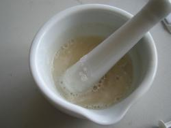

Foreword
Please note, 1 batch of this recipe will produce approximately 90L cola. You may want to divide all quantites by 1/2 if you do not want to become a small cola-producing factory. Scaling up the recipe (x2 or more) tends not to work due to the mechanics involved - if you double the measure of the emulsion you have to double your force. With a standard hammer drill this is no small act.
(Acacia Arabica gum arabic)
All ingredients
- orange oil
- lime oil
- lemon oil
- cassia oil
- nutmeg oil
- coriander oil
- lavender oil
- gum arabic
- caramel colour
- citric acid
- caffeine
- water
- GNU GPL
Step 1: 7x Formula
Using food-grade essential oils only, assemble 7.50 ml orange oil 7.00 ml lime oil 2.00 ml lemon oil 0.75 ml cassia oil 1.50 ml nutmeg oil 0.50 ml coriander oil (12 drops) 0.50 ml lavender oil (12 drops) 0.50 ml neroli oil (optional due to high expense of neroli). Using a measuring syringe, measure out the oils into a glass or ceramic container.
Then dissolve 20.0 g instant gum arabic (equivalent to 44ml) in 40 ml water (tap water or non-mineral bottled water, it should have low calcium and low magnesium). Mix the gum well in the water until there are no lumps.

Place the gum/water mix in a high-sided glass container, pyrex or laboratory glass are good if you can get it. Using a high-power corded drill with kitchen whisk attachment, whisk the gum mixture at high speed while your colleague adds the oils-mix from the measuring syringe in a steady stream of drops.
Continue to whisk at high speed for several minutes, or until oils and water emulsify. This is a state of reaction you will come to recognise in time. The resulting mixture will be cloudy. Test for emulsification by stirring a few drops of the mixture into 1 glass of water: no oils should be visible on the surface. You now have a successful flavour emulsion, which should hold for a minimum of 3 years.
Total flavour emulsion measurement: 65ml If emulsification is successful, continue to:
STEP 2: Concentrate
For easy mailout and long-distance production into cola syrup with the local addition of sugar and water. To your 65ml emulsion, add 195 ml double strength caramel colouring (we use DD Williamson Caramel Colour number 050 which is commerically manufactured for cola production). Using a large mortar and pestle, dissolve 65 ml citric acid (use a metric measuring spoon to measure it out) in 100ml water. This should dissolve easily.
When the mixture is clear, add 18ml caffeine powder through a fine sieve to break up any lumps. Mix the caffeine in to the citric acide solution very thoroughly, it will take 5-10 minutes to dissolve. Be sure to do it in the right order (dissolve the citric in water and then add caffeine), as adding caffeine to the water directly you can end up with a mysterious solid foam. Pass the citric-caffeine solution through fine muslin fabric (we use a jelly bag) to remove any grains, then add this to the caramel/flavour emulsion. This is your cola concentrate, total measurement 365ml, which is equivalent to around 90L eventual cola.
To subdivide the concentrate into manageable quantities, please consult the following table.
| concentrate size | LG | SM | MINI |
|---|---|---|---|
| concentrate volume | 56ml | 28ml | 14ml |
| makes up | 14L | 7L | 3.5L |
Step 3: The Cola Syrup
For a standard sugar-based cola, use 750ml water, 1.5KG sugar (refined white sugar unless you want a cloudy cola drink) and 56ml Cube-Cola concentrate. Make a sugar syrup by dissolving the sugar in the water over low heat. 750ml is the minimum amount of water that physics will allow you to dissolve 1.5KG sugar into, so be patient. When the sugar syrup has cooled to room temperature, add the 56ml cola concentrate. You now have approximately 1.75L Cube-Cola syrup for an eventual 14L Cube-Cola. As sugar is a preservative this will store for a long period perhaps years without any noticeable deterioration.
Step 4: The Cola
As required, make up your cola as a 7:1 mix, 7 parts fizzy water to 1 part cola syrup. We currently use 250 ml syrup in a 2L bottle of supermarket own brand sparkling table water. The sparkling water should have low mineral quantities, particularly sodium, so avoid mineral and soda waters where possible.